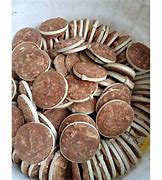

Tentang Gula lempeng
Gula lempeng adalah jenis gula merah khas dari Nusa Tenggara Timur (NTT).Gula ini memiliki ciri khas berupa bentuk lempengan pipih yang tipis, berbeda dengan gula merah pada umumnya yang berbentuk bulat atau cetakan. Proses pembuatan gula lempeng cukup unik dan masih menggunakan cara tradisional.
Bahan Utama
Bahan utama yang digunakan dalam pembuatan gula lempeng adalah nira lontar. Nira lontar adalah cairan manis yang diperoleh dari pohon lontar.
Resep Pembuatan
Alat
- Pisau sadap
- Wadah penampung nira
- Wajan besar
- Tungku
- Pengaduk
- Cetakan (biasanya terbuat dari daun pohon lontar)
Langkah-langkah
- Pilih pohon lontar yang sudah dewasa dan memiliki bunga yang siap disadap.
- Sayat bagian bunga pohon lontar menggunakan pisau sadap.
- Tampung nira yang keluar dalam wadah yang bersih.
- Pindahkan nira ke dalam wajan besar.
- Rebus nira di atas tungku dengan api sedang.
- Aduk terus menerus agar nira tidak gosong dan airnya menguap secara merata.
- Proses perebusan akan memakan waktu cukup lama, hingga nira mengental dan berubah warna menjadi cokelat tua.
- Tuang nira yang sudah mengental ke dalam cetakan.
- Biarkan nira mengeras dan dingin dalam cetakan.
- Keluarkan lempengan gula dari cetakan.
- Jemur lempengan gula di bawah sinar matahari langsung hingga benar-benar kering.
Penyajian
Gula lempeng, dengan cita rasanya yang manis alami dan teksturnya yang unik, memiliki banyak cara penyajian yang menarik.
Sebagai Pemanis Minuman:
- Kopi dan Teh: Gula semut sangat cocok untuk memaniskan kopi dan teh. Cukup tambahkan beberapa butir gula semut ke dalam minuman panas atau dingin.
- Minuman Segar: Gula semut juga bisa digunakan untuk memaniskan minuman segar seperti es teh, es kopi, atau jus buah.
- Cocktail: Untuk memberikan sentuhan manis alami pada cocktail, gula semut bisa digunakan sebagai pengganti gula pasir.
Sebagai Topping:
- Kue dan Dessert: Taburkan gula semut di atas kue, puding, atau es krim untuk memberikan rasa manis yang unik.
- Yogurt: Tambahkan gula semut ke dalam yogurt untuk memberikan rasa manis yang alami.
- Pancake dan Waffle: Taburkan gula semut di atas pancake atau waffle bersama dengan buah-buahan segar.
Sebagai Bahan Masak:
- Masakan Manis: Gula semut bisa digunakan untuk membuat berbagai macam masakan manis seperti kolak, bubur, atau puding.
- Masakan Gurih: Gula semut juga bisa digunakan untuk menambah rasa umami pada masakan gurih seperti tumisan sayuran atau sambal.